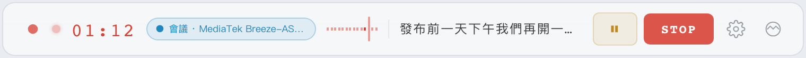
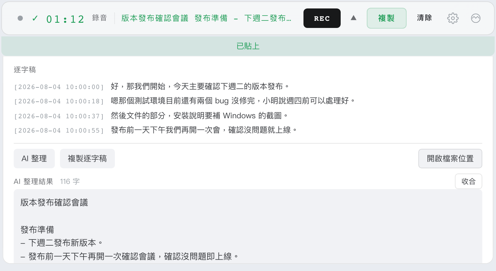
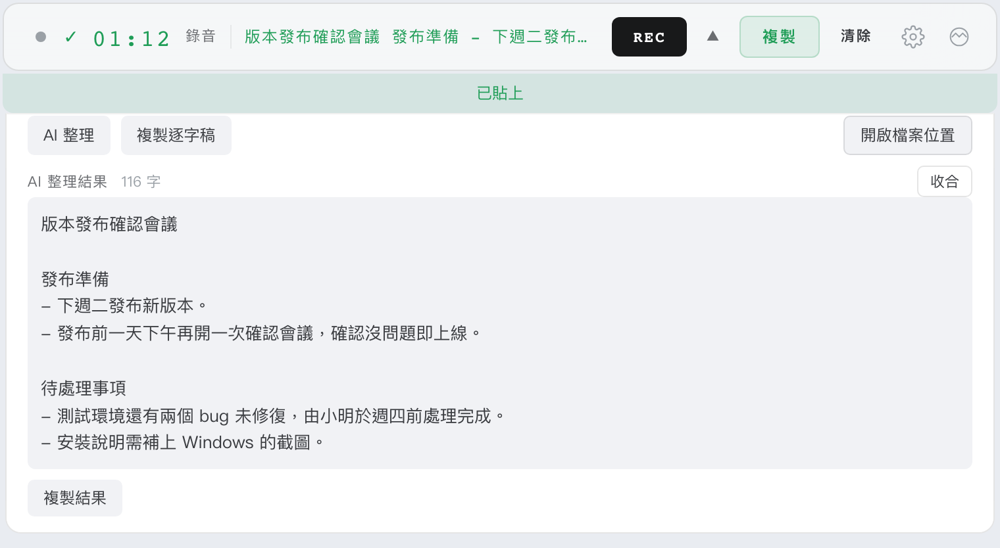
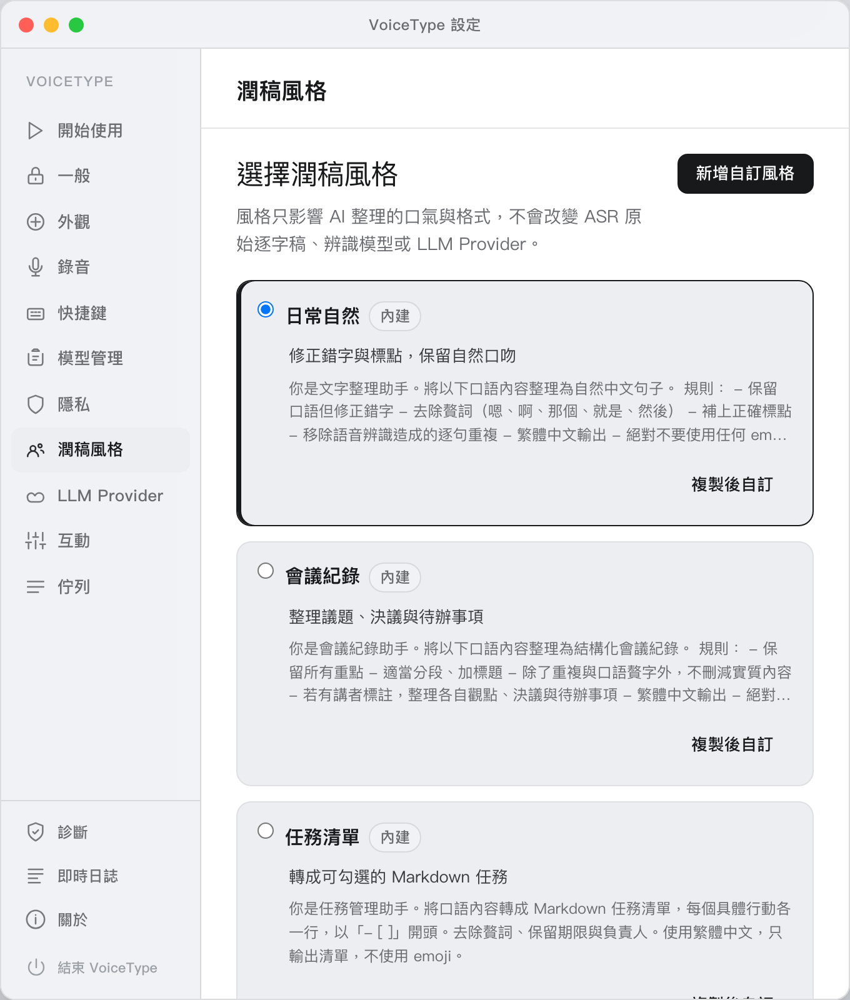
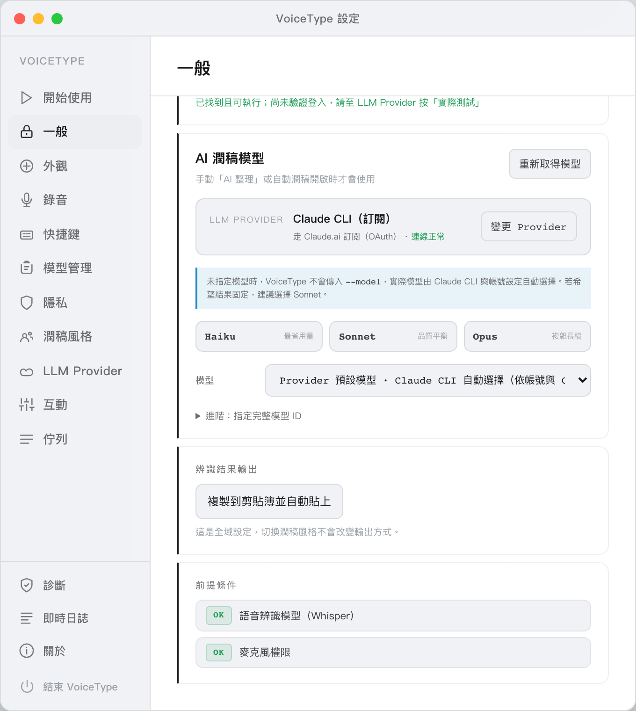
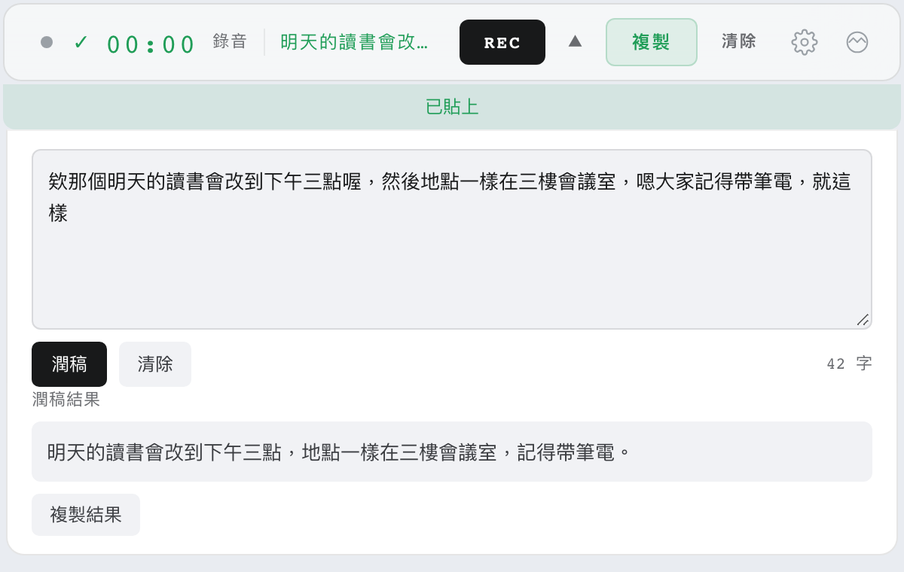
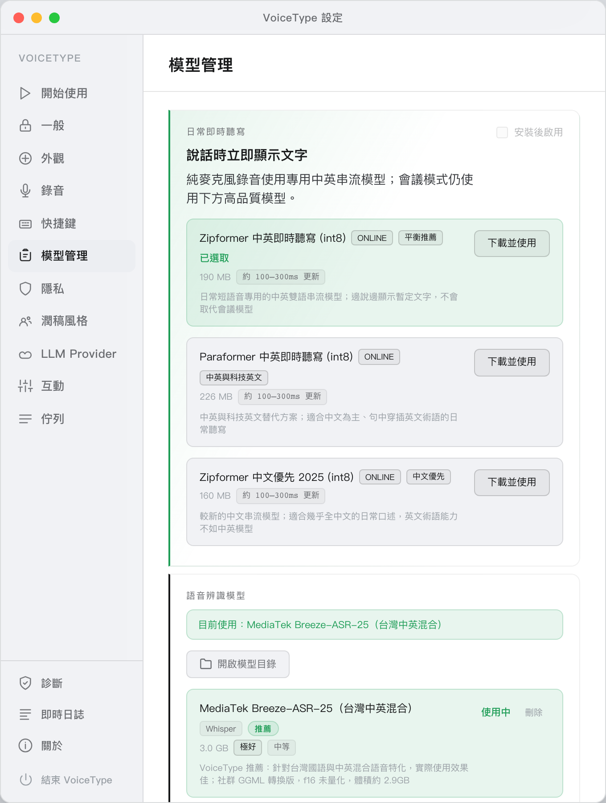
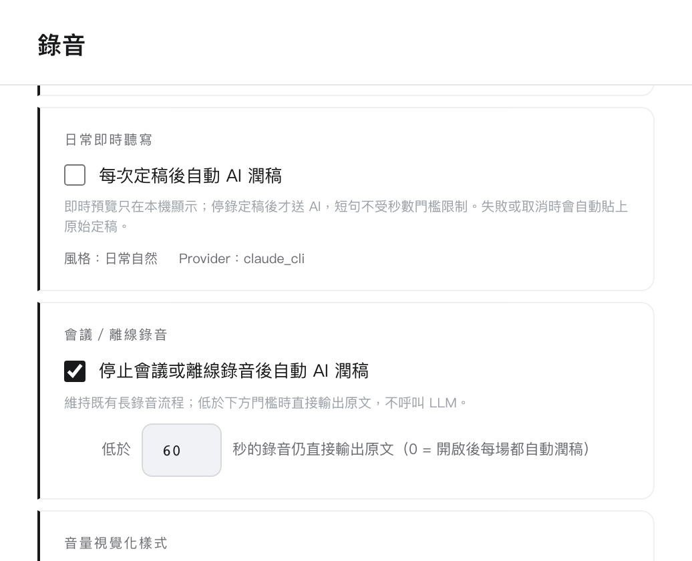

01 · 錄音錄音中就看得到辨識文字
按全域熱鍵或工具列的 REC 開始錄音。錄音中工具列顯示計時、目前的辨識模式與模型、音量波形，以及最新一段辨識出來的文字。
- 熱鍵預設 macOS Cmd+Shift+O、Windows Ctrl+Shift+O，可在「設定 → 快捷鍵」更換
- 觸發方式可選「按一下開始／再按一下停止」或「按住錄音／放開停止」
⏸按鈕暫停、STOP停止- 工具列寬度可以拖曳調整

桌面 App · macOS · Windows · Tauri v2
macOS／Windows 語音轉文字桌面 App，離線辨識加 AI 潤稿。
按全域熱鍵（macOS 預設 Cmd+Shift+O）開始錄音，語音辨識預設在本機完成。停止後可以交給 AI 依「潤稿風格」整理成會議紀錄、任務清單、郵件草稿等書面文字，結果預設直接貼到游標所在位置。不錄音時也能貼上文字直接潤稿。
需求：macOS 10.15 以上（Apple Silicon）或 Windows 10 以上（x64）；AI 潤稿預設使用 Claude Code CLI，也可改用其他 LLM Provider

// 功能
平常只是一條常駐工具列，不佔螢幕空間；停止錄音後才展開面板顯示逐字稿與結果。
按全域熱鍵或工具列的 REC 開始錄音。錄音中工具列顯示計時、目前的辨識模式與模型、音量波形，以及最新一段辨識出來的文字。
⏸ 按鈕暫停、STOP 停止
停錄後是否送 AI 潤稿，由「設定 → 錄音」的兩個開關決定，兩者預設都是關閉：沒開的話，結果就是原始逐字稿。

潤稿風格決定 AI 整理的口氣與格式，不會改變原始逐字稿、辨識模型或 LLM Provider。

預設會把結果寫進剪貼簿、模擬 Cmd+V／Ctrl+V 貼到目前游標所在位置；原本剪貼簿若是文字，貼上後會還原。也可以在「設定 → 一般 → 辨識結果輸出」改成「只複製到剪貼簿」。

按工具列的 TYPE，直接貼上文字進行 AI 潤稿，套用目前的潤稿風格與模型設定。下圖用的是「簡短訊息」風格；潤稿完成後同樣依「辨識結果輸出」設定自動貼上。

辨識引擎跑在本機：Whisper（whisper.cpp），以及 SenseVoice、Paraformer 等 sherpa-onnx 模型。模型在「設定 → 模型管理」下載，每個模型標出大小、品質、速度與適用情境。
.wav）和逐字稿（.txt）存在可自訂的目錄，展開面板的「開啟檔案位置」可直接打開
// AI 潤稿用哪個模型
AI 潤稿可以選 5 種 LLM Provider，在「設定 → LLM Provider」切換。Provider、模型、輸出方式都是全域設定，切換潤稿風格不會改變它們。
用免費額度的 Provider 錄音超過 10 分鐘時，工具列會提醒長逐字稿可能受速率或輸入長度限制；部分整理失敗時，失敗段以原文保留。
Claude CLI（訂閱） 走 Claude.ai 訂閱（OAuth） # 預設
Antigravity CLI（訂閱） 走 Google AI 訂閱
Google Gemini 免費 tier（15 RPM / 1500 RPD）
Groq（Llama / Mixtral） 免費 tier（限額但持續）
Ollama（本機） 本機，完全免費
// 安裝
前往 GitHub Releases 下載最新版本：macOS（Apple Silicon）是 VoiceType_x.x.x_aarch64.dmg，Windows（x64）是 VoiceType_x.x.x_x64-setup.exe。
# 把 VoiceType 拖入 Applications 資料夾後，在終端機執行： $ xattr -cr /Applications/VoiceType.app
.dmg，開啟後將 VoiceType 拖入 Applications 資料夾，再執行上面的指令。%APPDATA%\com.voicetype.app\logs\ 取得 bootstrap.log 與最新的當機記錄，到 GitHub Issues 回報。
截圖中「會議／離線錄音」的自動潤稿是手動開啟後的狀態；兩個開關的預設都是關閉。
// 使用前須知
xattr -cr /Applications/VoiceType.app，每次更新版本後需要重新執行一次。setx VOICETYPE_SOFTWARE_RENDERING 1 後重新啟動即改用軟體繪圖；改回執行 setx VOICETYPE_SOFTWARE_RENDERING 0。aarch64 版；Windows 為 x64。